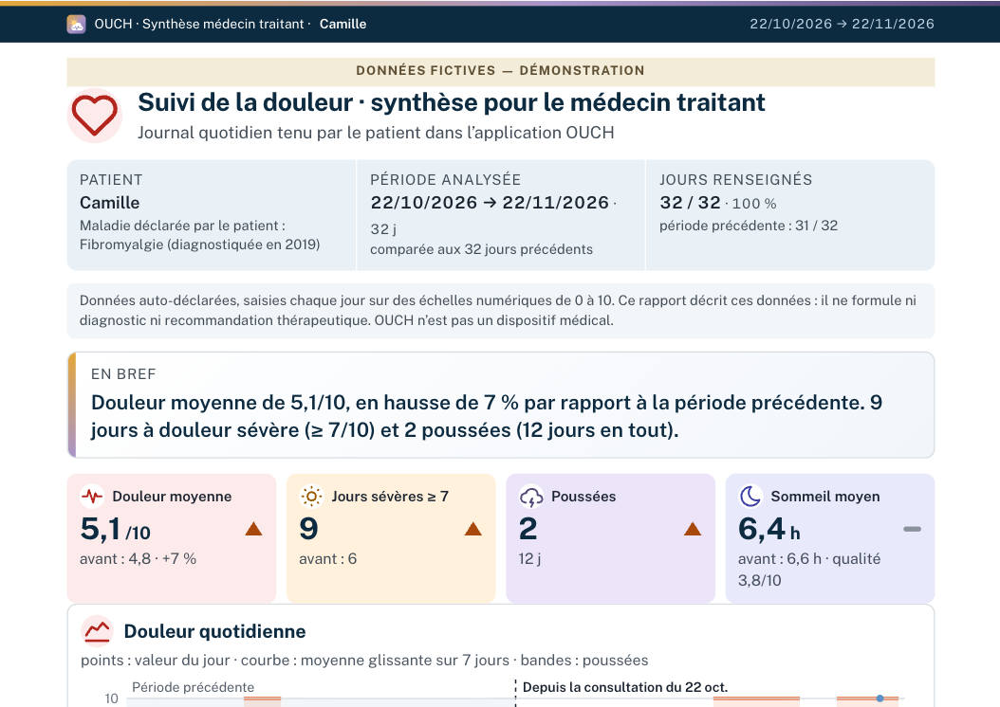
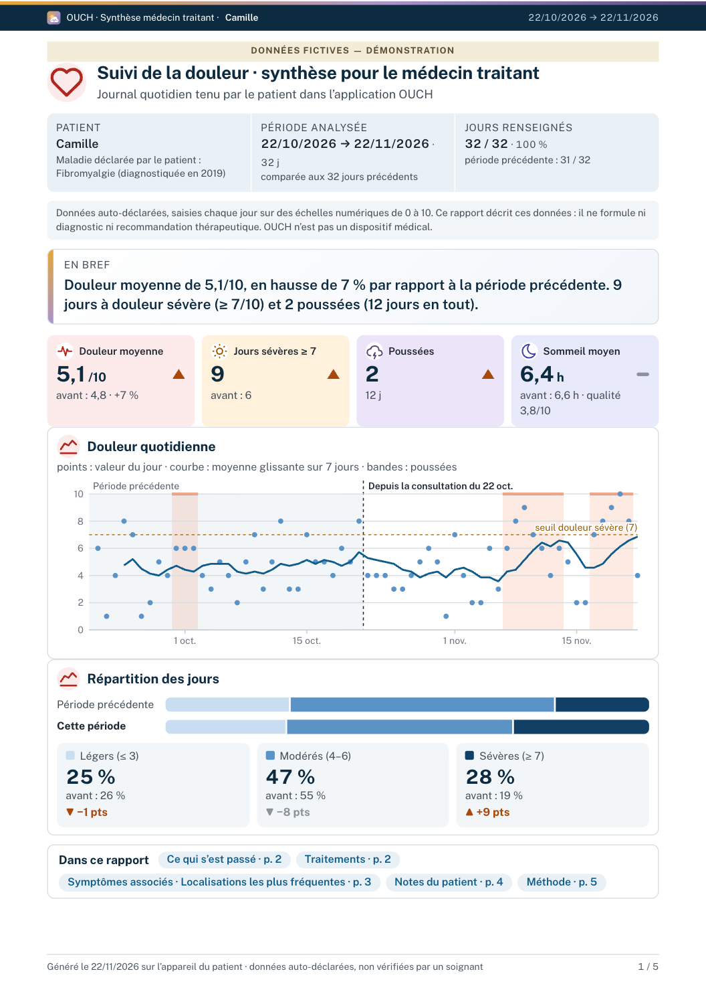

Un rapport OUCH,
mode d’emploi.
Votre patient tient un carnet de douleur dans OUCH, libre et gratuit, pour la fibromyalgie et les autres douleurs chroniques : une minute par jour, sans compte, ses données restent sur son téléphone. Voici le rapport qu’il en a tiré pour votre consultation, et comment le lire.

La première page, dans l’ordre

12345- 1Le bandeauLa période couverte (depuis le dernier rendez-vous du même type), celle d’avant à laquelle elle est comparée, et la part de jours renseignés. Les jours manquants ne sont jamais comblés.
- 2« En bref »Une phrase, avec les mêmes chiffres que les tuiles.
- 3Les chiffres clés et leur flècheLa flèche donne le sens du changement depuis la période d’avant, pas son ampleur ni si l’écart dépasse la variation habituelle (voir « À retenir », page 3).
- 4La courbePoints : douleur de chaque jour. Ligne : moyenne glissante sur 7 jours. Bandes ombrées : jours « plus difficiles » (poussées). Tirets : seuil de douleur sévère (7).
- 5La répartition des joursDeux barres (la période, celle d’avant) ; pour chaque catégorie, la part, la part d’avant et l’écart en points.
Une poussée, selon OUCH
Définition propre à OUCH, sans consensus : pas un critère diagnostique. Les périodes que le patient marque lui-même sont à part.
Ce que le patient ajoute
Ses questions, sa note après le rendez-vous, ses périodes difficiles et les pistes qu’il a gardées : dans ses mots, non mesurés. Des rapprochements entre jours, jamais des causes.
Ses questions figurent en tête du rapport ; sa note n’y est que s’il le souhaite.
Deux versions
Médecin traitant
Chiffres clés, courbe, répartition des jours comparée, traitements, questions du patient.
Centre douleur
Un résumé, puis six parties numérotées : douleur, traitements, symptômes, habitudes, questions et notes, méthode.
À garder en tête
- Données auto-déclarées, non vérifiées.
- Échelles de fatigue, sommeil et humeur non validées.
- Un rapprochement entre jours n’est jamais une cause.
- OUCH décrit : ni diagnostic, ni conseil de traitement.
- Lire un rapport OUCH 1 page
- Plaquette pour les soignants 2 pages
- Note méthodologique 17 pages : formules, seuils, sources
À télécharger dans l’app (« Vous êtes soignant ? » au premier écran) ou sur la page de la release. Mode démo : 90 jours fictifs.